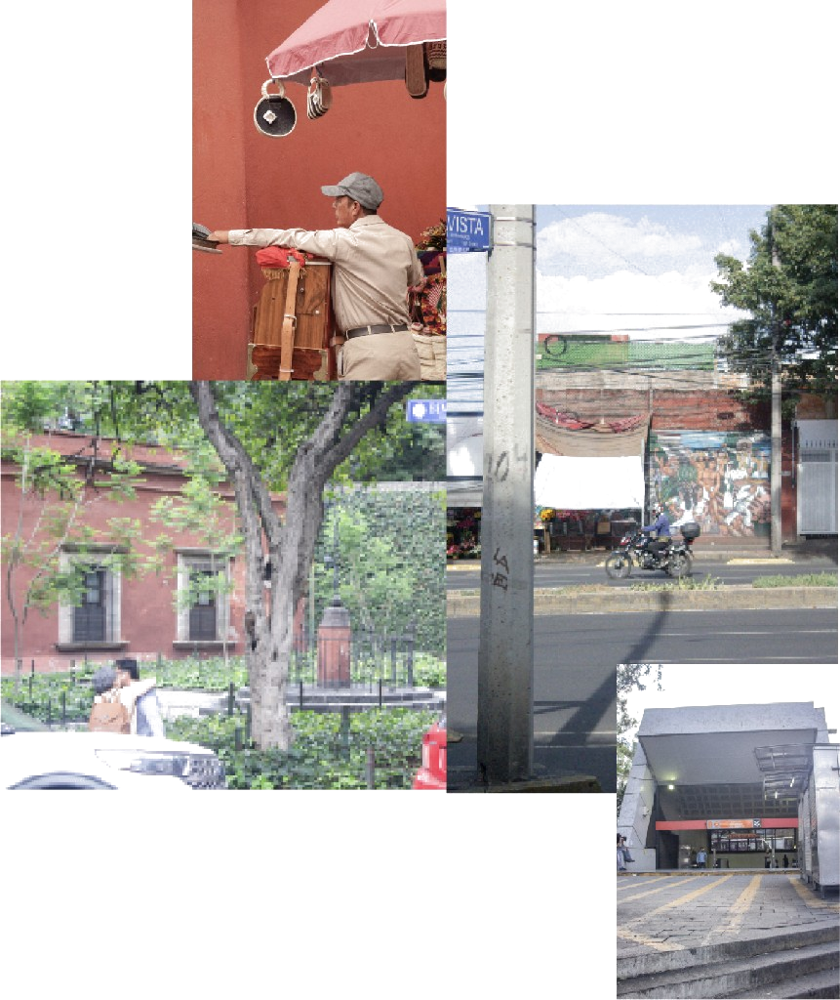
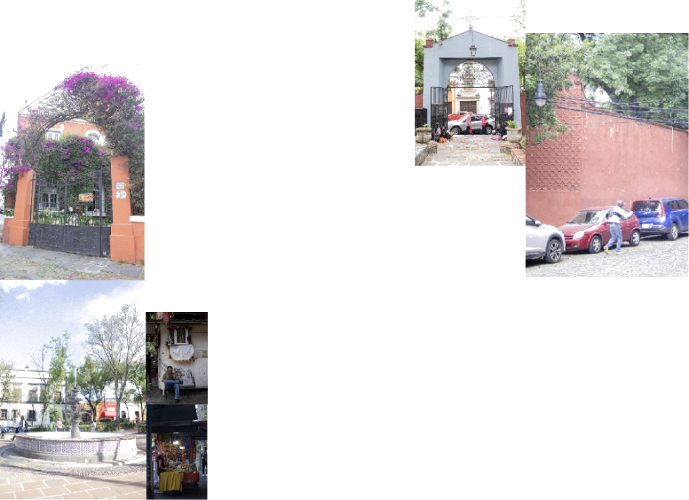

Documentación

Mirada Propia
Aunque fue un proceso complejo, decidimos hablar desde una perspectiva personal y honesta.
Este proyecto documenta y rescata aquello que capturó nuestra atención a través del diseño y la comunicación visual.

Sin embargo, caminar el lugar muchas veces nos permitió reconocer esquinas y rostros habituales.
Entre más explorábamos, más capas de la historia y el espacio de San Ángel se iban revelando ante nosotras.

El Proceso y el Descubrimiento de Capas
Iniciar las salidas de campo en San Ángel fue un reto metodológico.
El Encuentro con el Arte y la Comunidad
Las últimas visitas fueron las más enriquecedoras. Conectamos con la memoria viva del lugar a través de datos históricos, leyendas de casas embrujadas y pláticas con artistas del Bazar del Sábado.
Conversar con creadores que han trabajado para instituciones como Bellas Artes fue increíble para nuestro gusto por el arte.